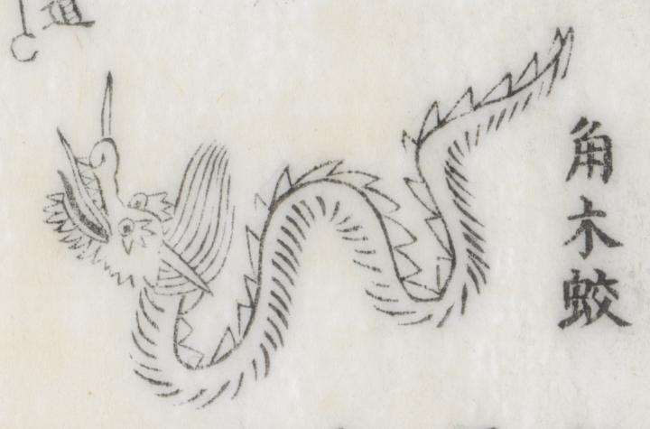

← 图鉴索引

足の生えていない蛇のような姿で蛟（みずち）が描かれている。
出典：親書誌：U426_nichibunken_0429：簠簋内傳諺解大全／日付：2016／資源識別子：U426_nichibunken_0429_0019_0000
Copyright (c)2010- International Research Center for Japanese Studies, Kyoto, Japan. All rights reserved.